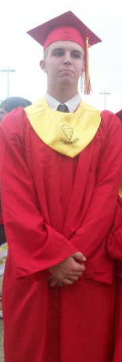

- Seneca High School
gradutate 2012. - University Of Louisville
Associates in General education 2015. - Coding Temple
Currently Enrolled.
About Me
I was born in Kentucky on October 5th, 1993. I come from a family of engineers working in various fields, so you could say it's the family business. My interest in technology was sparked by my father, who is a software engineer. As a child, I would spend time with my father and uncle, who piqued my curiosity by showing me the newest websites and applications they were developing. While attending college as a biology major, I minored in computer science. This rekindled my fascination with creating and developing applications. After college I spent time trying to figure out what to do with my life. I spent a few years tyring out different carrers. Everything from Resturaunt work to Automotive, I even spent some time as an E.M.T. during the covid pandemic working for Jeffersontown Fire Department. During this time my brother began in a coding bootcamp of his own. It was his persuasion and experience that lead me to pursue a career as a software engineer. I am currently enrolled in the Coding Temple software engineering course, and I am excited to continue my education and explore new career opportunities.
Carrer Goals
My current career goals include:
- Using what I have learned to secure a job in the field of software engineering.
- Pursue additional education or certification
- Gain enough experience to advance my carrer to a Leadership role